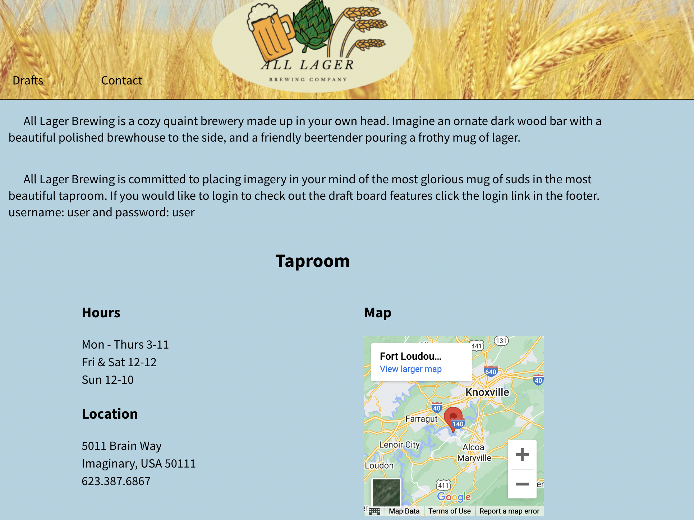

Ryan McMillan
Software Engineer/ Positive guy
Software Engineer/ Positive guy
I entered the field of software development in April of 2022 at DigitalCrafts in their Full-Stack Web Development Program. I started with no experience and have
worked hard to learn the basics of full-stack development. I have a never-ending thirst for
knowledge and to improve my skills.
Here are my projects from my time at DigItalCrafts. Check back soon, I will always be adding more
projects!
Draft Board is my Capstone Project for DigitalCrafts. I took this assignment on as a solo project. It is a combination of all of our learning during our time at DigitalCrafts. Draft-board is a full-stack web application concept built to be used by breweries and beer bars. It has an informational public web page accessible to the anyone, and it also includes an authenticated backend with session tracking. The authenticated users have access to the beer library and the draft board that can Chromecast to a television for display in a bar or taproom.
Technologies: Technologies: HTML5, CSS3, React, React-router, Redux, Styled-components, Express, Express-session, bcrypt, PostgreSQL, Sequelize, Chakra, JavaScript, Rest API, JSON
Trivia-app was built as a Reactjs module project. It was assigned as a solo project to to explore React. Trivia-App is a minimalist trivia application that offers two different trivia style games. A multiple choice multiplayer game and a rapid fire true or false game. Trivia-App was created as a solo project for the React module of April 2022 DigitalCrafts Full Time Web Development Course. The project was meant as an exercise for free practice and learning of React and Redux. It also builds on the foundation of working with an API and JSON data.
Technologies: HTML5, CSS3, React, React-router, Redux, Redux-toolkit, JavaScript, Styled-Components, html-entities
Project Blood Bath was a group project to work with back-end technologies. It incorporates server-side page rendering and a PostgreSQL database. The application is meant to mimic a blood bank. It has authentication for administration who can only sign other users up. The users an add donors, and donations to a database. Users can also look up the donations in the database. Since you can't create a login unless signed in use the username and password: user to login and explore.
Technologies: HTML5, CSS3, Express, Express-session, PostgreSQL, Sequelize
The Foodie-Bräu web app was created as part of a group front end project for the full time web development April 2022 cohort at Digital Crafts. The point of the project is to practice interacting with API databases, working with local storage, and html design an layout. This is the first group project I worked on. It is a beer search engine that will get recipes for the beers you select. It cross-references two different APIs.
Technologies: HTML5, CSS3, JavaScript, Bootstrap, API
